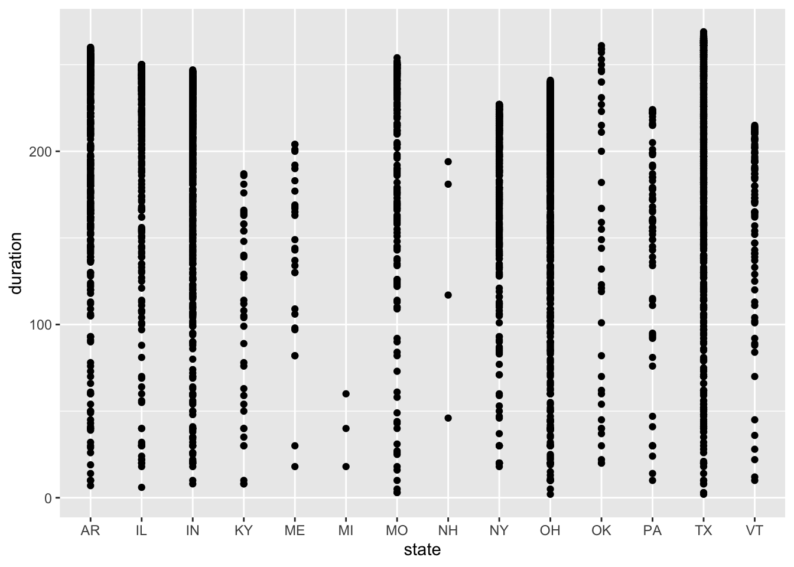

# load the data directly from Tidy Tuesday GitHub
eclipse_annular_2023 <- readr::read_csv('https://raw.githubusercontent.com/rfordatascience/tidytuesday/master/data/2024/2024-04-09/eclipse_annular_2023.csv')
eclipse_total_2024 <- readr::read_csv('https://raw.githubusercontent.com/rfordatascience/tidytuesday/master/data/2024/2024-04-09/eclipse_total_2024.csv')
eclipse_partial_2023 <- readr::read_csv('https://raw.githubusercontent.com/rfordatascience/tidytuesday/master/data/2024/2024-04-09/eclipse_partial_2023.csv')
eclipse_partial_2024 <- readr::read_csv('https://raw.githubusercontent.com/rfordatascience/tidytuesday/master/data/2024/2024-04-09/eclipse_partial_2024.csv')Tidy Tuesday Exercise
Load, Wrangle, and Explore the data
This week’s Tidy Tuesday exercise uses data from NASA’s Scientific Visualization Studio about the annular solar eclipse paths seen on October 14, 2023 and today, April 8, 2024. I added the eclipse_annular_2023.csv file into the data folder in the tidytuesday-exercise folder. The eclipse_partial_2023.csv and eclipse_partial_2024 files were not available for download because it is too large. I added the eclipse_total_2024.csv file to the same data folder. Step 1 is to load the data.
I need several package for this exercise.
# load packages
library(dplyr) # for basic syntax
library(here) # for setting file paths to save images
library(naniar) # for exploring missingness
library(ggplot2) # for exploratory plots
library(knitr) # for summary tables
library(rsample) # for sampling the testing/training data
library(corrplot) # for finding correlations between predictors
library(pROC) # to find the ROC curve
library(parsnip) # for resampling in cross validation
library(tidymodels) # for building models
library(patchwork) # for creating final figure The data dictionary shows that both datasets with information about total solar eclipse contains the same 10 variables: state, city name, latitude, longitude, time at which the moon first contacts the sun in this location, time at which the eclipse is at 50% in this location, time at which annularity begins in this location, time at which annularity ends in this location, time at which the eclipse is back to 50% in this location, and time at which the moon last contacts the sun in this location. The 2 datasets with partial solar eclipse information have the same first 4 variables, but contain 5 slightly different variables about when the moon contacts the sun. These 5 variables include time at which the moon first contacts the sun in this location, time at which the eclipse is at 50% of this location’s maximum, time at which the eclipse reaches 100% of this location’s maximum, time at which the eclipse is again at 50% of this location’s maximum, and time at which the moon last contacts the sun in this location.
Step 2 involves wrangling and exploring the data. I will check for missing variables first.
# explore missingness in each dataset
gg_miss_var(eclipse_annular_2023)gg_miss_var(eclipse_partial_2023)
gg_miss_var(eclipse_partial_2024)gg_miss_var(eclipse_total_2024)
Fortunately, there are no missing values! Thank you TidyTuedsay creators!
I need to take a glimpse of each dataset to get a sense of what I am working with.
# explore the structure of the dataset
glimpse(eclipse_annular_2023)Rows: 811
Columns: 10
$ state <chr> "AZ", "AZ", "AZ", "AZ", "AZ", "AZ", "AZ", "AZ", "AZ", "AZ", …
$ name <chr> "Chilchinbito", "Chinle", "Del Muerto", "Dennehotso", "Fort …
$ lat <dbl> 36.49200, 36.15115, 36.18739, 36.82900, 35.74750, 36.71717, …
$ lon <dbl> -110.0492, -109.5787, -109.4359, -109.8757, -109.0680, -110.…
$ eclipse_1 <time> 15:10:50, 15:11:10, 15:11:20, 15:10:50, 15:11:40, 15:10:40,…
$ eclipse_2 <time> 15:56:20, 15:56:50, 15:57:00, 15:56:20, 15:57:40, 15:56:00,…
$ eclipse_3 <time> 16:30:29, 16:31:21, 16:31:13, 16:29:50, 16:32:28, 16:29:54,…
$ eclipse_4 <time> 16:33:31, 16:34:06, 16:34:31, 16:34:07, 16:34:35, 16:33:21,…
$ eclipse_5 <time> 17:09:40, 17:10:30, 17:10:40, 17:09:40, 17:11:30, 17:09:10,…
$ eclipse_6 <time> 18:02:10, 18:03:20, 18:03:30, 18:02:00, 18:04:30, 18:01:30,…glimpse(eclipse_partial_2023)Rows: 31,363
Columns: 9
$ state <chr> "AL", "AL", "AL", "AL", "AL", "AL", "AL", "AL", "AL", "AL", …
$ name <chr> "Abanda", "Abbeville", "Adamsville", "Addison", "Akron", "Al…
$ lat <dbl> 33.09163, 31.56471, 33.60231, 34.20268, 32.87907, 33.21435, …
$ lon <dbl> -85.52703, -85.25912, -86.97153, -87.17800, -87.74090, -86.8…
$ eclipse_1 <time> 15:41:20, 15:42:30, 15:38:20, 15:37:50, 15:37:20, 15:38:50,…
$ eclipse_2 <time> 16:23:30, 16:25:50, 16:20:50, 16:19:50, 16:20:40, 16:21:30,…
$ eclipse_3 <time> 17:11:10, 17:13:50, 17:07:50, 17:06:50, 17:07:30, 17:08:40,…
$ eclipse_4 <time> 18:00:00, 18:03:10, 17:56:30, 17:55:10, 17:56:00, 17:57:20,…
$ eclipse_5 <time> 18:45:10, 18:49:30, 18:42:10, 18:40:30, 18:42:50, 18:43:20,…glimpse(eclipse_partial_2024)Rows: 28,844
Columns: 9
$ state <chr> "AL", "AL", "AL", "AL", "AL", "AL", "AL", "AL", "AL", "AL", …
$ name <chr> "Abanda", "Abbeville", "Adamsville", "Addison", "Akron", "Al…
$ lat <dbl> 33.09163, 31.56471, 33.60231, 34.20268, 32.87907, 33.21435, …
$ lon <dbl> -85.52703, -85.25912, -86.97153, -87.17800, -87.74090, -86.8…
$ eclipse_1 <time> 17:43:00, 17:41:40, 17:41:00, 17:41:30, 17:38:40, 17:40:40,…
$ eclipse_2 <time> 18:24:10, 18:21:40, 18:23:10, 18:24:10, 18:20:40, 18:22:40,…
$ eclipse_3 <time> 19:02:00, 19:00:30, 19:00:00, 19:00:30, 18:58:00, 18:59:50,…
$ eclipse_4 <time> 19:39:20, 19:38:50, 19:36:40, 19:36:40, 19:35:00, 19:36:50,…
$ eclipse_5 <time> 20:18:50, 20:17:20, 20:17:30, 20:18:00, 20:15:50, 20:17:20,…glimpse(eclipse_total_2024)Rows: 3,330
Columns: 10
$ state <chr> "AR", "AR", "AR", "AR", "AR", "AR", "AR", "AR", "AR", "AR", …
$ name <chr> "Acorn", "Adona", "Alexander", "Alicia", "Alix", "Alleene", …
$ lat <dbl> 34.63879, 35.03993, 34.61859, 35.89291, 35.42200, 33.76482, …
$ lon <dbl> -94.20011, -92.89913, -92.45122, -91.08345, -93.72878, -94.2…
$ eclipse_1 <time> 17:30:40, 17:33:20, 17:33:20, 17:37:30, 17:32:50, 17:29:10,…
$ eclipse_2 <time> 18:15:50, 18:18:30, 18:18:30, 18:22:40, 18:17:50, 18:14:20,…
$ eclipse_3 <time> 18:47:35, 18:50:08, 18:51:09, 18:54:29, 18:49:54, 18:46:15,…
$ eclipse_4 <time> 18:51:37, 18:54:22, 18:53:38, 18:58:05, 18:53:00, 18:50:16,…
$ eclipse_5 <time> 19:23:40, 19:26:10, 19:26:20, 19:29:50, 19:25:20, 19:22:30,…
$ eclipse_6 <time> 20:08:30, 20:10:50, 20:11:10, 20:14:10, 20:10:00, 20:07:40,…Each dataset has two character variables, two numeric variables, and 5 or 6 times variables. The partial eclipse datasets are obviously much larger because it is more common for states to experience a partial eclipse. The 2024 total eclipse dataset eclipse_total_2024 has 3,330 observations while eclipse_annular_2024 only has 811 observations.
Formulate questions and explore the data further
This process is iterative, so I added more questions as I created new variables and explored them.
- How many states experience a total eclipse in both 2023 and 2024?
- Which region of the US experiences the longest amount of time in a total eclipse?
- How long does a total eclipse last on average?
- What are the factors affecting the duration of the eclipse in the US?
The first question I want to explore is how many states experience a total eclipse in both years. I need to find the unique states in each dataset first.
# find how many states experience total eclipses
unique(eclipse_annular_2023$state)[1] "AZ" "CA" "CO" "NV" "NM" "OR" "TX" "UT"unique(eclipse_total_2024$state) [1] "AR" "IL" "IN" "KY" "ME" "MI" "MO" "NH" "NY" "OH" "OK" "PA" "TX" "VT"# visualize these distributions
states_2023 <- ggplot(eclipse_annular_2023, aes(x=state)) +
geom_bar() +
labs(x="States", y="Cities Experiencing Total Eclipse", title= "2023 Total Eclipse Distribution")
states_2024 <- ggplot(eclipse_total_2024, aes(x=state)) +
geom_bar() +
labs(x="States", y="Cities Experiencing Total Eclipse", title= "2024 Total Eclipse Distribution")
states_2023states_2024The states that experience a full eclipse in 2023 include Arizona, California, Colorado, Nevada, Oregon, Texas, and Utah. New Mexico accounts for over 300 observations of cities that experience the total eclipse with Texas following at 240 cities. The states that experience a full eclipse in 2024 are Arkansas, Illinois, Indiana, Kentucky, Maine, Michigan, Missouri, New Hampshire, New York, Ohio, Oklahoma, Pennsylvania, Texas, and Vermont. Ohio accounts for the most cities experiencing the total eclipse in 2024 with almost 650 observations, followed by Indiana and Texas with 590 observations each. It is clear that more states experience a total eclipse in 2024 compared to 2023, and Texas is the only state that experiences both total eclipses.
I think a region variable would be helpful for exploring areas that experience both total eclipses and possibly predicting which states experience both eclipses. I will use the lat and long variables to create a new region variable.
# create a new region variable
eclipse_annular_2023 <- eclipse_annular_2023 %>%
mutate(region = case_when(
between(lat, 37, 47.5) & between(lon, -82, -66) ~ "Northeast",
between(lat, 37, 47.5) & between(lon, -97, -82) ~ "Midwest",
between(lat, 24, 37) & between(lon, -97, -66) ~ "South",
between(lat, 24, 47.5) & between(lon, -125, -104) ~ "West",
TRUE ~ NA_character_ )) # set NA if city does not fall in one of these regions
# plot distribution by region
regions_2023 <- ggplot(eclipse_annular_2023, aes(x=region)) + geom_bar()
regions_2023I see that over 200 cities were not assigned to a region, so I think these boundaries are too specific. These NA observations account for too large of a portion of the data to be removed or ignored, so I need to change my regional boundaries.
# create new boundaries for broader regions
eclipse_annular_2023 <- eclipse_annular_2023 %>%
mutate(region = case_when(
between(lat, 37, 47.5) & between(lon, -82, -66) ~ "Northeastern",
between(lat, 24, 37) & between(lon, -82, -66) ~ "Southeastern",
between(lat, 37, 47.5) & between(lon, -125, -104) ~ "Northwestern",
between(lat, 24, 37) & between(lon, -125, -104) ~ "Southwestern",
TRUE ~ "Central")) #set to Central if city does not fall into one of these regions
# plot new region variable distribution
region2_2023 <- ggplot(eclipse_annular_2023, aes(x=region)) + geom_bar()
region2_2023I think this distribution more accurately reflects what I am trying to create for my future model. I need to repeat this process with the data from 2024.
# create new boundaries for broader regions
eclipse_total_2024 <- eclipse_total_2024 %>%
mutate(region = case_when(
between(lat, 37, 47.5) & between(lon, -82, -66) ~ "Northeastern",
between(lat, 24, 37) & between(lon, -82, -66) ~ "Southeastern",
between(lat, 37, 47.5) & between(lon, -125, -104) ~ "Northwestern",
between(lat, 24, 37) & between(lon, -125, -104) ~ "Southwestern",
TRUE ~ "Central")) #set to Central if city does not fall into one of these regions
# plot new region variable distribution
region_2024 <- ggplot(eclipse_total_2024, aes(x=region)) + geom_bar()
region_2024It is interesting that most cities that experienced the total eclipse were in the Southeastern region in 2023, but most cities experiencing the total eclipse in 2024 are in the central region.
I want to explore the time variables in the datasets to answer my questions about length of time. I will create a new variable duration using the time at which annularity begins in each location minus the time annularity ends in each location for each year.
# create new variable for length of time experiencing annularity in 2023
eclipse_annular_2023 <- eclipse_annular_2023 %>%
mutate(duration = eclipse_4-eclipse_3)
# determine average time each city experiences annularity in 2023
mean(eclipse_annular_2023$duration)Time difference of 206.0284 secs# create new variable for length of time experiencing annularity in 2024
eclipse_total_2024 <- eclipse_total_2024 %>%
mutate(duration = eclipse_4-eclipse_3)
# determine average time each city experiences annularity in 2024
mean(eclipse_total_2024$duration)Time difference of 185.0441 secsThe average duration of annularity in 2023 was 206.0284 seconds compared to 185.0441 seconds in 2024. This is an interesting finding because I would have expected the duration to be longer in 2024 since more states experience the total eclipse in 2024.
I want to explore this finding further by plotting region against the duration of the total eclipse.
# plot state and duration by region in 2023
region_duration2023 <- ggplot(eclipse_annular_2023, aes(x=state, y=duration, by = region)) + geom_point()
# plot state and duration by region in 2024
region_duration2024 <- ggplot(eclipse_total_2024, aes(x=state, y=duration, by = region)) + geom_point()
# compare the two graphs
region_duration2023region_duration2024
The distributions of duration time are surprising to me because each state experiences a similar range of duration times, but I expected durations within each state to be more similar with a smaller range. In 2023, Texas had the widest range of duration times even though it did not have the most cities experiencing the total eclipse. New Mexico, Texas, and Utah have the most observations of duration time above the mean of 206 seconds, which makes sense because these states account for the most cities experiencing total eclipse. In 2024, Texas also has the widest range of duration times, followed by Missouri, Arkansas, and Ohio. Another interesting finding is the New Hampshire still has a range of duration times from about 50 seconds to 200 seconds, which is interesting because there are only 4 cities that experience the total eclipse in this state. I would expect those 4 cities to have more similar duration times because they are so close together.
I want to get more exact information on the range of duration time between the 2 years.
# explore the range of duration times over each year
range(eclipse_annular_2023$duration)Time differences in secs
[1] 4 293range(eclipse_total_2024$duration)Time differences in secs
[1] 2 269The range of duration times is slightly larger in 2023 with 293 being the longest duration time and 4 seconds being the shortest duration time. The range of duration times in 2024 exist between 2 and 269 seconds.
For the last piece of my exploratory data analysis, I want to get a summary table of numeric variables grouped by region for each year.
# summary table for 2023
summary2023 <- eclipse_annular_2023 %>%
group_by(region) %>%
summarise(across(c(lat, lon, eclipse_1, eclipse_2, eclipse_3, eclipse_4, eclipse_5, eclipse_6, duration), mean))
kable(summary2023)| region | lat | lon | eclipse_1 | eclipse_2 | eclipse_3 | eclipse_4 | eclipse_5 | eclipse_6 | duration |
|---|---|---|---|---|---|---|---|---|---|
| Central | 29.59810 | -99.24227 | 55403.19 secs | 58425.28 secs | 60671.92 secs | 60897.17 secs | 63259.84 secs | 66680.87 secs | 225.2480 secs |
| Northwestern | 41.42616 | -118.48570 | 54425.93 secs | 56977.03 secs | 58878.69 secs | 59075.54 secs | 61087.24 secs | 64019.76 secs | 196.8496 secs |
| Southwestern | 35.38936 | -106.98187 | 54794.89 secs | 57591.61 secs | 59682.54 secs | 59880.13 secs | 62093.73 secs | 65309.58 secs | 197.5916 secs |
# summary table for 2024
summary2024 <- eclipse_total_2024 %>%
group_by(region) %>%
summarise(across(c(lat, lon, eclipse_1, eclipse_2, eclipse_3, eclipse_4, eclipse_5
, eclipse_6, duration), mean))
kable(summary2024)| region | lat | lon | eclipse_1 | eclipse_2 | eclipse_3 | eclipse_4 | eclipse_5 | eclipse_6 | duration |
|---|---|---|---|---|---|---|---|---|---|
| Central | 36.89396 | -89.88413 | 63635.40 secs | 66317.20 secs | 68221.10 secs | 68409.62 secs | 70311.13 secs | 72938.78 secs | 188.5168 secs |
| Northeastern | 42.87239 | -77.56089 | 65212.29 secs | 67807.17 secs | 69610.56 secs | 69784.61 secs | 71558.35 secs | 73987.65 secs | 174.0438 secs |
In 2023, the central region experienced the longest average duration of the total eclipse at 225.2480 seconds, followed by the Southwestern and Northwestern regions, respectively. In 2024, the central region also experienced the longest average duration of the total eclipse at 188.5168 seconds, followed by the Northeastern region at 174.0438 seconds.
These observations lead me to wonder what determines duration of a total eclipse since it appears to vary so much between states. I will create models with duration as the outcome of interest. I will use state, region, eclipse_1, and eclipse_6 as the predictors. eclipse_1 is the time at which the moon first contacts the sun in this location, and eclipse_6 is the time at which the moon last contacts the sun in this location.
Further pre-processs and clean data for modeling
Since I want to explore the factors that affect duration of total eclipse time. I want to combine the data from 2023 and 2024 into 1 dataset. I want the merged dataset to include all the cities that experienced a total eclipse in either year because that will increase my sample size and make my models more appropriate for the cross-validation I plan on doing. I chose to use a simple merge() function because I want the same 12 variables to be included inn the final dataset but with observations from every city that experienced the total eclipse in either 2023 or 2024. I want this long format to for my subsequent model instead of a wide format.
# create one dataset with observations from both years of total
all_total <- merge(eclipse_annular_2023, eclipse_total_2024, all = TRUE)
# glimpse at newly joined dataset
glimpse(all_total)Rows: 4,141
Columns: 12
$ state <chr> "AR", "AR", "AR", "AR", "AR", "AR", "AR", "AR", "AR", "AR", …
$ name <chr> "Acorn", "Adona", "Alexander", "Alicia", "Alix", "Alleene", …
$ lat <dbl> 34.63879, 35.03993, 34.61859, 35.89291, 35.42200, 33.76482, …
$ lon <dbl> -94.20011, -92.89913, -92.45122, -91.08345, -93.72878, -94.2…
$ eclipse_1 <time> 17:30:40, 17:33:20, 17:33:20, 17:37:30, 17:32:50, 17:29:10,…
$ eclipse_2 <time> 18:15:50, 18:18:30, 18:18:30, 18:22:40, 18:17:50, 18:14:20,…
$ eclipse_3 <time> 18:47:35, 18:50:08, 18:51:09, 18:54:29, 18:49:54, 18:46:15,…
$ eclipse_4 <time> 18:51:37, 18:54:22, 18:53:38, 18:58:05, 18:53:00, 18:50:16,…
$ eclipse_5 <time> 19:23:40, 19:26:10, 19:26:20, 19:29:50, 19:25:20, 19:22:30,…
$ eclipse_6 <time> 20:08:30, 20:10:50, 20:11:10, 20:14:10, 20:10:00, 20:07:40,…
$ region <chr> "Central", "Central", "Central", "Central", "Central", "Cent…
$ duration <drtn> 242 secs, 254 secs, 149 secs, 216 secs, 186 secs, 241 secs,…This merge leaves me with a dataset containing 4,141 observations of 12 variables, including the two new ones I created, region and duration.
I want to create a logistic model in the next section, so I will use the average duration to divide the observations into short eclipse and long eclipse to create a binary outcome variable, but this is not necessarily meaningful.
# find average duration in the training data
mean(all_total$duration)Time difference of 189.1538 secs# create binary outcome for logistic regression
all_total <- all_total %>%
mutate(logoutcome = case_when(duration <= 189 ~ 'short',
duration >189 ~ 'long'))
# check if creation of new variable was successful
table(all_total$logoutcome)
long short
2512 1629 # change variable type to factor for logistic regression
all_total$logoutcome <- as.factor(all_total$logoutcome)There appear to be more cities that experience a long eclipse, 2512 to be exact, compared to only 1629 cities who experience a short eclipse.
It is likely that the eclipse variables are going to be correlated, so I need to address that before building models.
# convert eclipse variables to numeric to determine correlation
all_total$eclipse_1 <- as.numeric(all_total$eclipse_1)
all_total$eclipse_2 <- as.numeric(all_total$eclipse_2)
all_total$eclipse_3 <- as.numeric(all_total$eclipse_3)
all_total$eclipse_4 <- as.numeric(all_total$eclipse_4)
all_total$eclipse_5 <- as.numeric(all_total$eclipse_5)
all_total$eclipse_6 <- as.numeric(all_total$eclipse_6)
all_total$duration <- as.numeric(all_total$duration)
# explore correlations between numeric predictors
cor(all_total$lat, all_total$lon)[1] 0.4931961cor(all_total$eclipse_1, all_total$eclipse_2)[1] 0.9996674cor(all_total$eclipse_2, all_total$eclipse_3)[1] 0.9997357cor(all_total$eclipse_3, all_total$eclipse_4)[1] 0.999836cor(all_total$eclipse_4, all_total$eclipse_5)[1] 0.9996481cor(all_total$eclipse_5, all_total$eclipse_6)[1] 0.999159As expected, each of the 6 eclipse variables are highly correlated with correlation coefficients of 0.99. I will only include one of these variables in my multivariate model. I think eclipse_3 is the most interesting for the questions I want to answer because this variable includes the time at which annularity begins in this location.
It is crucial to split the data into training and testing portions before I build my models. Since I have over 1,000 observations in my dataset, I have plenty of data to reasonably split into testing and training pieces.
# set the seed for reproducibility
set.seed(2468)
# put 75% into the training data
datasplit <- initial_split(all_total, prop = 3/4)
# create data frames for the two sections
train_data <- training(datasplit)
test_data <- testing(datasplit)Fit 3 different model types
I want to build a simple linear model, a multivariate linear model, and a logistic model. For the purpose of this exercise, I will use my binary variable to use as my outcome for a logistic regression. Again, it is not necessarily very meaningful.
I will create the workflows for each of my models first. The simple linear regression model with include the region as the single predictor for the duration outcome because I am most interested in this variable. I will add the lat, lon, and eclipse_3 variables as predictors for the multivariate linear model. I considered using the state as a predictor as well, but that generates too many coefficients which decreases interpretability. The state is captured by the region, lat, and lon variables, so it still has an effect in the model. The logistic regression model will include all 4 predictors in the multivariate linear model for the binary outcome.
# create simple linear regression workflow
slm_mod <- linear_reg() %>%
set_engine("lm") %>%
fit(duration ~ region, data = train_data)
tidy(slm_mod)# A tibble: 4 × 5
term estimate std.error statistic p.value
<chr> <dbl> <dbl> <dbl> <dbl>
1 (Intercept) 193. 1.41 137. 0
2 regionNortheastern -18.8 3.03 -6.23 5.38e-10
3 regionNorthwestern 1.96 5.06 0.387 6.99e- 1
4 regionSouthwestern 3.77 4.42 0.853 3.94e- 1# create multivariate linear regression workflow
mlr_mod <- linear_reg() %>%
set_engine("lm") %>%
fit(duration ~ lat + lon + eclipse_3 + region, data = train_data)
tidy(mlr_mod)# A tibble: 7 × 5
term estimate std.error statistic p.value
<chr> <dbl> <dbl> <dbl> <dbl>
1 (Intercept) 737. 84.2 8.75 3.51e-18
2 lat -1.56 0.702 -2.22 2.62e- 2
3 lon 1.30 0.441 2.94 3.33e- 3
4 eclipse_3 -0.00547 0.000908 -6.03 1.87e- 9
5 regionNortheastern -14.1 4.42 -3.18 1.48e- 3
6 regionNorthwestern -1.36 17.2 -0.0791 9.37e- 1
7 regionSouthwestern -19.2 9.69 -1.99 4.72e- 2# create logistic regression workflow
log_mod <- logistic_reg() %>%
set_engine("glm") %>%
fit(logoutcome ~ lat + lon + eclipse_3 + region, data = train_data)
tidy(log_mod)# A tibble: 7 × 5
term estimate std.error statistic p.value
<chr> <dbl> <dbl> <dbl> <dbl>
1 (Intercept) -9.65 2.91 -3.32 0.000910
2 lat -0.00434 0.0233 -0.186 0.852
3 lon -0.0131 0.0146 -0.897 0.370
4 eclipse_3 0.000120 0.0000324 3.70 0.000216
5 regionNortheastern 0.415 0.141 2.94 0.00326
6 regionNorthwestern 0.639 0.579 1.10 0.270
7 regionSouthwestern 0.833 0.332 2.51 0.0121 # exponentiate region coefficients
exp(0.832)[1] 2.29791exp(0.639)[1] 1.894585exp(0.415)[1] 1.514371The simple linear regression model reveals that the Southwestern region is the most strongly positively correlated with the outcome based on a coefficient of 3.770638. The Northeastern region is the most negatively correlated with the outcome based on a large coefficient of -18.844.
The multivariate linear regression model shows a reversal of association for the Southwestern region, which now has a coefficient of -19.227. The Northeastern region is still negatively correlated with the outcome, but the magnitude of association decreased. The latitude and longtiude predictor have opposite effects on the outcome, and the eclipse_3 predictor has a negligible effect on the outcome. It is clear that the region predictor is most strongly associated with the outcome.
The logistic regression model draws similar conclusions with the region variable being the most impactful on the binary outcome. The odds of experiencing a long duration of the eclipse increase by a multiplicative factor of 2.29791 for the southwestern region, 1.894585 for the Northwestern region, and 1.514371 for the Northeastern region.
Choosing the best model
I need to make predictions for each of the models to explore performance metrics for my models. I have experience with interpreting RMSE and R-squared values, so I am going to experiment with MAE (mean absolute error) and MSE (mean square error) as well, which are appropriate performance metrics for models with a continuous outcome. I will explore accuracy and ROC for the linear regression model because I had trouble making the ROC curve during the first exercise with it.
# set seed for reproducibility
set.seed(2468)
# create predictions using the simple linear regression model
pred1 <- predict(slm_mod, new_data = train_data) %>%
select(.pred)
# create a data frame with the predictions and true values of duration
data1 <- bind_cols(pred1, train_data$duration) %>%
rename(duration = "...2")
# find performance metrics to determine model fit
rmse1<- rmse(data1, truth = duration, estimate = .pred)
rsq1<- rsq(data1, truth = duration, estimate = .pred)
mae1<- mae(data1, truth = duration, estimate = .pred)
mse1 <- mean((data1$duration - data1$.pred)^2)
# create predictions using the simple linear regression model
pred2 <- predict(mlr_mod, new_data = train_data) %>%
select(.pred)
# create a data frame with the predictions and true values of duration
data2 <- bind_cols(pred2, train_data$duration) %>%
rename(duration = "...2")
# find performance metrics to determine model fit
rmse2<- rmse(data2, truth = duration, estimate = .pred)
rsq2<- rsq(data2, truth = duration, estimate = .pred)
mae2 <- mae(data2, truth = duration, estimate = .pred)
mse2 <- mean((data2$duration - data2$.pred)^2)
## display results
print(rmse1)# A tibble: 1 × 3
.metric .estimator .estimate
<chr> <chr> <dbl>
1 rmse standard 64.6print(rmse2)# A tibble: 1 × 3
.metric .estimator .estimate
<chr> <chr> <dbl>
1 rmse standard 63.8print(rsq1)# A tibble: 1 × 3
.metric .estimator .estimate
<chr> <chr> <dbl>
1 rsq standard 0.0137print(rsq2)# A tibble: 1 × 3
.metric .estimator .estimate
<chr> <chr> <dbl>
1 rsq standard 0.0394print(mae1)# A tibble: 1 × 3
.metric .estimator .estimate
<chr> <chr> <dbl>
1 mae standard 51.3print(mae2)# A tibble: 1 × 3
.metric .estimator .estimate
<chr> <chr> <dbl>
1 mae standard 50.9print(mse1)[1] 4175.899print(mse2)[1] 4067.012The RMSE for the SLM model is 64.6212 compared to 63.77313 for the MLR model, which is slightly better. The R-squared value for the SLM model is extremely low at 0.01375. The MLR model has a higher R-squared value of 0.03944, which shows some improvement. The MAE for the simple linear regression model is 51.29597 compared to 50.88217 for the multiple linear regression model. While the MLR performs slightly better, I was expecting a larger improvement in performance with the addition of the other 3 predictors. The MSE for the SLR model is 4175.899 compared to 4067.012 for the MLR model, which reaches the same conclusions as the MAE performance metric.
I will explore accuracy and ROC for the linear regression model because I had trouble making the ROC curve during the first exercise with it. I cannot use the method that Dr. Handel used in one of his previous keys because I include a factor variable in the formula, which prevents the metric set from running. I will create the ROC curve manually instead.
# make predictions using the logistic model
pred3 <- predict(log_mod, new_data = train_data) %>%
select(.pred_class)
# create a data frame with the predicted and true values
data3 <- bind_cols(pred3, train_data$logoutcome) %>%
rename(logoutcome = "...2")
# find accuracy of the logistic model
acc1 <- accuracy(data3, truth = logoutcome , estimate = .pred_class)
# create data set with truth and prediction variables for logistic model
data4 <- data.frame(truth = train_data$logoutcome,
estimate = as.numeric(pred3$.pred_class))
# find the ROC curve
roc_curve1 <- roc(data4$truth, data4$estimate)
# calculate area under the curve score
roc_auc1 <- auc(roc_curve1)
# print results
print(acc1)# A tibble: 1 × 3
.metric .estimator .estimate
<chr> <chr> <dbl>
1 accuracy binary 0.607print(roc_auc1)Area under the curve: 0.5The accuracy for the SLR model is 0.6074074, and the area under the curve is 0.5 for this model.
I will use cross-validation with 10 folds for each of the linear models to see if there is improvement in the performance metrics.
# set the seed for reproducibility
set.seed(2468)
# create 10 folds
folds <- vfold_cv(train_data, v=10)
# define your model specification
lm_spec <- linear_reg() %>%
set_engine("lm")
# initialize a workflow and fit it to the training data for the simple linear model
slm_wf <- workflow() %>%
add_model(lm_spec) %>%
add_formula(duration ~ region) %>% #specify the formula since we are not using a recipe
fit(data = train_data)
# resample the SLM model
slm_wf_rs <- slm_wf %>%
fit_resamples(folds)
# initialize a workflow and fit it to the training data for the multiple linear regresion model
mlr_wf <- workflow() %>%
add_model(lm_spec) %>%
add_formula(duration ~ lat + lon + eclipse_3 + region) %>% #specify the formula since we are not using a recipe
fit(data = train_data)
# resample the MLR model
mlr_wf_rs <- mlr_wf %>%
fit_resamples(folds)
# find the performance metrics
collect_metrics(slm_wf_rs)# A tibble: 2 × 6
.metric .estimator mean n std_err .config
<chr> <chr> <dbl> <int> <dbl> <chr>
1 rmse standard 64.7 10 0.536 Preprocessor1_Model1
2 rsq standard 0.0146 10 0.00369 Preprocessor1_Model1collect_metrics(mlr_wf_rs)# A tibble: 2 × 6
.metric .estimator mean n std_err .config
<chr> <chr> <dbl> <int> <dbl> <chr>
1 rmse standard 63.9 10 0.508 Preprocessor1_Model1
2 rsq standard 0.0379 10 0.00609 Preprocessor1_Model1The cross-validation results yield an RMSE of 64.7009 for the SLM model and an R-squared of 0.01458156. The original RMSE value of 64.6212 indicates that the cross-validated results are slightly worse because the RMSE is a little higher, and the original R-squared of 0.01375 indicates the cross-validated model performs slightly worse. The cross-validated results for the MLR model yield an RSE of 63.9469 compared to an original RMSE of 63.77313, which shows slightly worse performance. The cross-validated R-squared value is 0.03789013 compared to the original R-squared of 0.03944, which also suggests slightly worse performance. Since these differences are so small, the conclusions from both processes should be the same: the MLR model out-performs the SLM model by a slight margin.
Pick Final Model
Since I created the binary outcome for the purpose of practicing logistic regression, I will not consider that model as the final model because the outcome is not particularly meaningful. Before I can pick the final model, I need to assess the predicted versus observed outcomes, the residuals, and the uncertainty for the SLM and MLR models.
I will model the predicted versus the observed outcomes first.
# set seed for reproducibility
set.seed(2468)
# create data frame with the observed values and both sets of predicted values
plotdata <- data.frame(
observed = c(train_data$duration),
predicted_SLM = c(pred1$.pred),
predicted_MLR = c(pred2$.pred),
model = rep(c("SLM model", "MLR model"), each = nrow(train_data))) # add label indicating the model
# create a visual representation
plot <- ggplot(plotdata, aes(x = observed)) +
geom_point(aes(y = predicted_SLM, color = "SLM model"), shape = 1) +
geom_point(aes(y = predicted_MLR, color = "MLR model"), shape = 2) +
geom_abline(slope = 1, intercept = 0, linetype = "dashed", color = "black") + #add the 45 degree line
xlim(0, 300) + #limit the x-axis values
ylim(0, 300) + #limit the y-axis values
labs(x = "Observed Values", y = "Predicted Values", title = "Observed vs Predicted Values for Both Models")
# save figure
figure_file = here("tidytuesday-exercise", "obs_pred_plot.png")
ggsave(filename = figure_file, plot=plot) This graph is really disappointing. We expect the observed versus predicted plot to follow the 45 degree line that represents a 1:1 ratio. Clearly, neither model is close to achieving this expectation. The blue circles representing the SLM model are in a single horizontal line, which suggests that the model is just predicting the average duration time. The MLR model is a little better because there is some variation in predictions, but it is still not close to the preferred 45 degree relationship.
I want to see if there is a pattern in the residuals next.
# create data frame with predictions and residuals for SLM model
SLMresiduals <- data.frame(predicted_SLMmodel = c(pred1$.pred),
residuals = c(pred1$.pred - train_data$duration)) # calculate residuals
# plot predictions versus residuals for MLR model
SLM_res_plot<- ggplot(SLMresiduals, aes(x=predicted_SLMmodel, y=residuals)) +
geom_point() +
geom_abline(slope = 0, intercept = 0, color = "pink", linewidth = 1.5) +
ylim(-100,100) + #ensure equal amounts in positive and negative direction
labs(x= "Predicted Values", y= "Residuals", title = "SLM Model Residual Plot")
# create data frame with predictions and residuals for MLR model
MLRresiduals <- data.frame(predicted_MLRmodel = c(pred2$.pred),
residuals = c(pred2$.pred - train_data$duration)) # calculate residuals
# plot predictions versus residuals for MLR model
MLR_res_plot<- ggplot(MLRresiduals, aes(x=predicted_MLRmodel, y=residuals)) +
geom_point() +
geom_abline(slope = 0, intercept = 0, color = "pink", linewidth = 1.5) +
ylim(-100,100) + #ensure equal amounts in positive and negative direction
labs(x= "Predicted Values", y= "Residuals", title = "MLR Model Residual Plot")
# compare the two plots
SLM_res_plotWarning: Removed 306 rows containing missing values (`geom_point()`).# save MLR residuals plot
figure_file2 = here("tidytuesday-exercise", "mlr_residuals.png")
ggsave(filename = figure_file2, plot=MLR_res_plot) Warning: Removed 301 rows containing missing values (`geom_point()`).The SLM model residual plot is interesting because there are 4 vertical lines of residuals for 4 predicted values, which helps explain the horizontal line seen in the previous plot. This must be resulting from the 4 region options in the region variable, so the model is predicting an average duration for each region. The residuals appear to be fairly balanced between positive and negative values, especially for the predicted value around 191. The MLR residual plot shows more variation, but there still appear to be 4 bands of residuals in the plot. There is a cluster of negative residuals between the 185 and 195 predicted values which is likely due to the large number of cities classified in the Central region, so there appear to be more negative residuals than positive residuals.
The last factor I need to consider before choosing the model is the uncertainty. I need to bootstrap the data 100 times to find confidence intervals for the predicted values.
# set the seed for reproducibility
set.seed(2468)
# create 100 bootstraps with the training data
bootstraps <- bootstraps(train_data, times = 100)
# create empty vector to store predictions list
preds_bs <- vector("list", length = length(bootstraps))
# write a loop to fit the SLM model to each bootstrap and make predictions
for (i in 1:length(bootstraps)) {
bootstrap_sample <- analysis(bootstraps$splits[[i]]) # isolate the bootstrap sample
model <- lm(duration ~ region, data = bootstrap_sample) # fit the model using the bootstrap sample
predictions <- predict(model, newdata = train_data) # make predictions with the training data
preds_bs[[i]] <- predictions # store predictions in the empty vector
}Now that I have my bootstrap predictions for the SLM model, I need to find the median and 95% confidence intervals for the each of the 100 predictions.
# create an empty array to store the predictions
num_samples <- length(preds_bs)
num_datapoints <- length(preds_bs[[1]])
preds_array <- array(NA, dim = c(num_samples, num_datapoints))
# fill the array with predictions from bootstrappping
for (i in 1:num_samples) {
preds_array[i,] <- unlist(preds_bs[[i]])
}
# find the median and 95% confidence intervals of each prediction with SLM model
preds <- preds_array %>%
apply(2, quantile, c(0.05, 0.5, 0.95)) %>%
t()I will combine these variables to create a visualization of the uncertainty.
# create a data frame with all the necessary variables for SLM uncertainty
SLMdata <- data.frame(
observed = c(train_data$duration),
point_estimates = c(pred1$.pred),
medians = preds[, 2],
lower_bound = preds[, 1],
upper_bound = preds[, 3]
)
# create uncertainty visualization
SLM_uncertainty <- ggplot(SLMdata, aes(x = observed, y = point_estimates)) +
geom_point(color = "black") +
geom_point(aes(y = medians), color = "green") +
geom_errorbar(aes(ymin = lower_bound, ymax = upper_bound), width = 0.1, color = "blue") +
geom_abline(slope = 1, intercept = 0, linetype = "dashed", color = "black") + # add 45 degree line
xlim(225, 300) + #zoom in on confidence intervals
ylim(150, 250) + #zoom in on confidence intervals
labs(x = "Observed Values", y = "Predicted Values", title = "SLM Model Uncertainty")
SLM_uncertaintyWarning: Removed 1959 rows containing missing values (`geom_point()`).
Removed 1959 rows containing missing values (`geom_point()`).This plot is not particularly helpful because all the observations are grouped together so densley, but it appears that the point estimates align with the predicted values for 2 of the regions, which are seen in the center of the graph. The region indicated by the predicted value of 175 has a lot of uncertainty because the confidence intervals from the median do not overlap with the point estimates. The region with the highest predicted value also seems to have a high degree of uncertinay, but at least some of the confidence intervals overlap with the predictions here.
I will repeat this process for the MLR model.
# set the seed for reproducibility
set.seed(2468)
# create 100 bootstraps with the training data
bootstraps <- bootstraps(train_data, times = 100)
# create empty vector to store predictions list
preds_bs <- vector("list", length = length(bootstraps))
# write a loop to fit the SLM model to each bootstrap and make predictions for the MLR model
for (i in 1:length(bootstraps)) {
bootstrap_sample <- analysis(bootstraps$splits[[i]]) # isolate the bootstrap sample
model <- lm(duration ~ lat + lon + eclipse_3 + region, data = bootstrap_sample) # fit the model using the bootstrap sample
predictions <- predict(model, newdata = train_data) # make predictions with the training data
preds_bs[[i]] <- predictions # store predictions in the empty vector
}
# create an empty array to store the predictions
num_samples2 <- length(preds_bs)
num_datapoints2 <- length(preds_bs[[1]])
preds_array2 <- array(NA, dim = c(num_samples, num_datapoints))
# fill the array with predictions from bootstrappping
for (i in 1:num_samples2) {
preds_array2[i,] <- unlist(preds_bs[[i]])
}
# find the median and 95% confidence intervals of each prediction
preds2 <- preds_array2 %>%
apply(2, quantile, c(0.05, 0.5, 0.95)) %>%
t()
# create a data frame with all the necessary variables for MLR uncertainty
MLRdata <- data.frame(
observed = c(train_data$duration),
point_estimates = c(pred2$.pred),
medians = preds2[, 2],
lower_bound = preds2[, 1],
upper_bound = preds2[, 3]
)
# create uncertainty visualization
MLR_uncertainty <- ggplot(MLRdata, aes(x = observed, y = point_estimates)) +
geom_point(color = "black") +
geom_point(aes(y = medians), color = "green") +
geom_errorbar(aes(ymin = lower_bound, ymax = upper_bound), width = 0.1, color = "blue") +
geom_abline(slope = 1, intercept = 0, linetype = "dashed", color = "black") + # add 45 degree line
xlim(0, 300) + #zoom in on confidence intervals
ylim(150, 250) + #zoom in on confidence intervals
labs(x = "Observed Values", y = "Predicted Values", title = "MLR Model Uncertainty")
# save MLR uncertainty plot
figure_file3 = here("tidytuesday-exercise", "mlr_uncertainty.png")
ggsave(filename = figure_file3, plot=MLR_uncertainty) This model is more helpful because I can see that there is strong overlap between the confidence intervals and the point estimates for predicted values greater than 175. For the point estimates around the predicted value of 175, there is high uncertainty because the confidence intervals do not overlap with the point estimates very often.
I think that the MLR model with the latitude, longitude, time at which the eclipse began in the location, and region variables is the best choice because it has lower uncertainty than the SLM model. The SLM model appears to only predict the average duration for each region based on the @obs_pred_plot, which is not very helpful. Including the model with more predictors provides more information on the duration of the eclipse. This variation in predictions can be seen in the @mlr_residuals plot which shows 4 bands of residuals that appear to be fairly balanced among 3 bands. While there is one cluster of negative residuals, I think it is reasonable to conclude that there are an equal amount of positive residuals in that band even though they are more spread out. The uncertainty in the MLR model is lower compared to the SLR model as seen in @ml_uncertainty. There is strong overlap in confidence intervals and predicted values for 3 out of 4 regions, which is much better than the lack of overlap between these values for any region in the SLM model. Based on the more equal distribution of residuals, lower uncertainty, better performance metrics and my research question about factors determining duration of eclipse, I choose the MLR model as my final model.
Evaluate on Test Data
It is now time to use the test data to determine how well my model performs on data it has not seen before. I want to make a plot with the observed and predicted values from both sets of data to see how well they overlap.
# set seed for reproducibility
set.seed(2468)
# create predictions using MLR with the test data
testpred <- predict(mlr_mod, new_data = test_data) %>%
select(.pred)
# create a data frame with the predictions and true values of duration
testdata2 <- bind_cols(testpred, test_data$duration) %>%
rename(duration = "...2")
# create visualization of testing and training data
testtrain <- ggplot() +
geom_point(data = testdata2, aes(x = duration, y = .pred, color = "test")) +
geom_point(data = data2, aes(x = duration, y = .pred, color = "train")) +
scale_color_manual(values = c("blue", "pink")) +
labs(x="Observed Values", y="Predicted Values", title = "Observed vs Predicted Values for Test and Train Data")
testtrainI am very pleased with the amount of overlap between the testing and training data. The band representing the Central region, which has the most observations, has the best overlap, and all four regions are clearly discernable in the testing and training data. I feel more confident about my model based on how well it performed with the testing data.
I also want to compare the residuals from the training data to the residuals from the testing data.
# create data frame with predictions and residuals for testing data using MLR model
testresiduals <- data.frame(predicted_MLRmodel = c(testdata2$.pred),
residuals = c(testdata2$.pred - testdata2$duration)) # calculate residuals
# plot predictions versus residuals for MLR model
test_res_plot<- ggplot(testresiduals, aes(x=predicted_MLRmodel, y=residuals)) +
geom_point() +
geom_abline(slope = 0, intercept = 0, color = "pink", linewidth = 1.5) +
ylim(-100,100) + #ensure equal amounts in positive and negative direction
labs(x= "Predicted Values", y= "Residuals", title = "MLR Model Residual Plot with Test Data")
test_res_plotWarning: Removed 119 rows containing missing values (`geom_point()`).This residual plot looks exactly like the first one with the training data, just with less observations. There is still a large cluster of observations between predicted values of 185 and 195. Since there are less observations here, it is easier to see that there is likely more negative residuals, which indicates that the model might underestimate the outcome of eclipse duration.
Lastly, I want to use cross-valdiation to find performance metrics for the model using the testing data only.
# set the seed for reproducibility
set.seed(2468)
# initialize a workflow and fit it to the testing data for the multiple linear regresion model
mlr_wf_test <- workflow() %>%
add_model(lm_spec) %>%
add_formula(duration ~ lat + lon + eclipse_3 + region) %>% #specify the formula since we are not using a recipe
fit(data = test_data)
# resample the MLR model
mlr_wf_rs_test <- mlr_wf_test %>%
fit_resamples(folds)
# find performance metricsc
collect_metrics(mlr_wf_rs_test)# A tibble: 2 × 6
.metric .estimator mean n std_err .config
<chr> <chr> <dbl> <int> <dbl> <chr>
1 rmse standard 63.9 10 0.508 Preprocessor1_Model1
2 rsq standard 0.0379 10 0.00609 Preprocessor1_Model1The RMSE for the model using test data is 63.9469 which is exactly the same as the RMSE of 63.9469 found with the training data. This is a good sign that my model is performing well because it does not perform any worse on the test data. The same conclusion can be drawn from the R-squared value of 0.03789013. I am very pleased with the results of this test, and I feel more confident in my model.
Summary of findings
I started this analysis with several different questions in mind ranging from which states experienced an eclipse in both 2023 and 2024 to the length of the average duration of eclipses to which region of the US experienced the longest amount of time in a total eclipse.
# create final figure with state level information from both years
final_figure1 <- states_2023 + states_2024
# save final figure
figure_file4 = here("tidytuesday-exercise", "final_figure1.png")
ggsave(filename = figure_file4, plot=final_figure1) Saving 7 x 5 in imageAs seen in the @final-figure1, Texas is the only state that experiences a total eclipse in both 2023 and 2024. New Mexico had the most cities experiencing total eclipse in 2023 followed by Texas and Oregon. Ohio had the most cities experiencing total eclipse in 2024 followed by Texas and Indiana.
After combining the data of states experiencing total eclipse in both years, I found that the average duration of the eclipse was 189.1538 seconds, and there are more cities that experience a longer eclipse, 2512 to be exact, compared to only 1629 cities who experience a shorter eclipse based on the binary classification of eclipse duration. I was also curious about how these durations differed by region.
# create data frame with summary of duration by region
duration_summary <- all_total %>%
group_by(region) %>%
summarise(mean_duration = mean(duration),
min_duration = min(duration),
max_duration = max(duration),
total_count = n()) %>%
rename(
Average_Duration = mean_duration,
Minimum_Duration = min_duration,
Maximum_Duration = max_duration,
Cities = total_count)
#clean up the table
summary_table <- kable(duration_summary)
# save the table
summarytable_file <- here("tidytuesday-exercise", "summarytable.rds")
saveRDS(summary_table, file = summarytable_file)| region | Average_Duration | Minimum_Duration | Maximum_Duration | Cities |
|---|---|---|---|---|
| Central | 191.8668 | 2 | 293 | 2785 |
| Northeastern | 174.0438 | 10 | 234 | 799 |
| Northwestern | 196.8496 | 4 | 282 | 246 |
| Southwestern | 197.5916 | 18 | 285 | 311 |
Duration of Total Eclipse by Region
According to @summary-table, the Southwestern region experienced the longest average duration of 197.5916 seconds, but only 311 cities fall in this region. The Central region has the most cities, and the average duration for these 2785 cities is 191.8668 seconds. The Northeastern region experienced the shortest average eclipse time of 174.0438 seconds.
After exploring 3 models to explore the outcome of interest, I found that the strongest predictor of average duration of eclipse time is the region variable. The Southwestern region has the strongest relationship with the average duration variable, followed by the Northeastern region. The Central region had the weakest association with the outcome variable, which could be explained by the fact that it contained the most cities with the widest distribution of average eclipse duration. The latitude and longitude variables were not strong predictors of the outcome variable, and the time at which annularity begins in this location variable was the least impactful on the outcome.